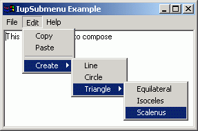

Creates a menu item that, when selected, opens another menu.
Ihandle* IupSubmenu(char *title, Ihandle *menu); [in C] iup.submenu{menu: ihandle; title = title: string} -> (elem: ihandle) [in Lua] submenu(title, menu) [in LED]title: String containing the text to be shown on the item. It is a creation-only attribute and cannot be changed later.
menu: menu identifier.This function returns the identifier of the created submenu, or NULL if an error occurs.
KEY: Associates a key to the submenu. In Windows, when used will also set an underscore on the respective letter of the submenu title.
OPEN_CB: Called just before the submenu is opened.
MENUCLOSE_CB: Called right before the submenu is closed.
